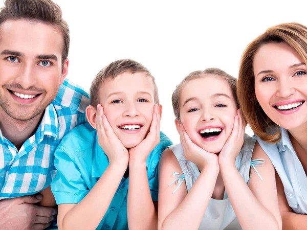
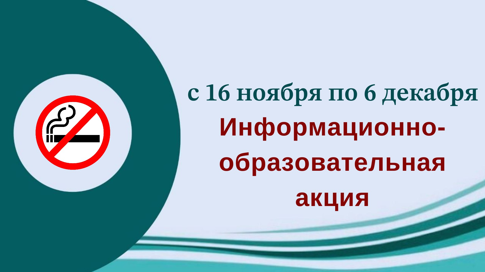
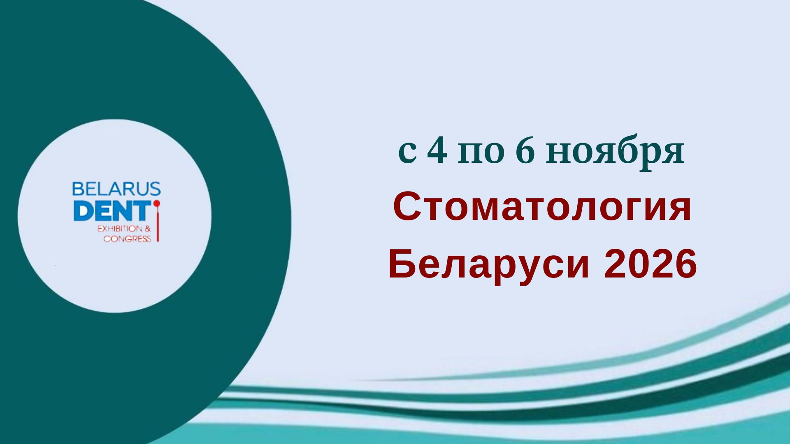

Стоматологическое терапевтическое отделение
Основное здание📍 ул. Притыцкого, 46
- ☎ +375 17 243-92-86 регистратура
- ☎ +375 17 243-97-84 зав. отделением
- ☎ +375 29 584-99-56 МТС
Уважаемые посетители! По техническим причинам исследования на КЛКТ по адресу ул. Притыцкого, 46 временно не проводятся. Приносим извинения за причинённые неудобства. — Администрация.
Лечение, протезирование, хирургия, ортодонтия и детская стоматология для жителей Фрунзенского района и всех пациентов Минска. Приём ведётся по адресу ул. Притыцкого, 46 и в филиале №1 на ул. Нёманская, 46.

Нажмите на любой номер телефона с мобильного, чтобы сразу позвонить. Все четыре отделения поликлиники собраны в одном месте.
📍 ул. Притыцкого, 46
📍 ул. Притыцкого, 46
📍 ул. Притыцкого, 46
📍 г. Минск, ул. Нёманская, 46
Полный спектр стоматологической помощи в одном месте — от профилактики и рентгена до сложного протезирования.
Лечение кариеса, пульпита, периодонтита, эстетическая реставрация и профессиональная гигиена.
Подробнее → Восстановление Ортопедическая стоматологияПротезирование, коронки, мостовидные и съёмные конструкции, восстановление зубов на имплантатах.
Подробнее → Операции Хирургическая стоматологияБережное удаление зубов, зубосохраняющие операции, подготовка и проведение имплантации.
Подробнее → Для детей Детская стоматологияПрофилактика и лечение зубов у детей и подростков в спокойной и доброжелательной обстановке.
Подробнее → Прикус Ортодонтическая стоматологияИсправление прикуса и выравнивание зубного ряда в любом возрасте, включая брекет-системы.
Подробнее → Снимки РентгенодиагностикаПрицельные снимки, панорамная рентгенография и телерентгенография на Притыцкого, 46 и в филиале №1.
Подробнее → Диагностика Компьютерная томография 3DВысокоточная 3D-диагностика челюстно-лицевой области (внимание: на Притыцкого, 46 временно приостановлена).
Подробнее → Производство Зуботехническая лабораторияСобственная лаборатория поликлиники для точного и оперативного изготовления зубных протезов.
Подробнее →Здоровье зубов — важная составляющая общего самочувствия организма. Мы создали пространство, где современные технологии сочетаются с внимательной заботой.
Используем эффективную местную анестезию нового поколения. Все манипуляции проводятся деликатно и бережно.
В поликлинике работают терапевты, хирурги, ортопеды и ортодонты — все вопросы решаются в одном месте по согласованному плану.
Высокоточные рентген-аппараты и дентальный микроскоп позволяют выявлять проблемы на ранней стадии и лечить с высокой точностью.
Работаем по доступным государственным тарифам в соответствии с постановлениями Министерства здравоохранения Республики Беларусь.
Льготы, закрепление за поликлиникой, приём у руководства и полезные памятки.
Актуальные события поликлиники и профилактические памятки о здоровье.





Поликлиника принимает пациентов по двум адресам во Фрунзенском районе Минска.

220082, г. Минск, ул. Притыцкого, 46 (ст. м. «Спортивная»)
Терапевтическое, ортопедическое и детское отделения, хирургия, рентген, приёмная главного врача.
г. Минск, ул. Нёманская, 46 (платный приём взрослого населения)
Терапевтическая, ортопедическая и ортодонтическая стоматология, рентгенодиагностика. Регистратура: +375 17 368-82-06, +375 29 856-79-14.
Ссылки на ресурсы Министерства здравоохранения, Мингорисполкома и справочные службы.